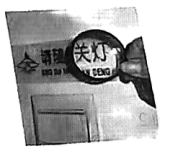
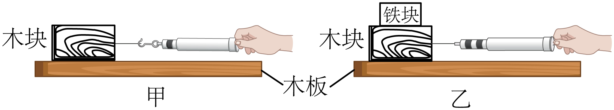
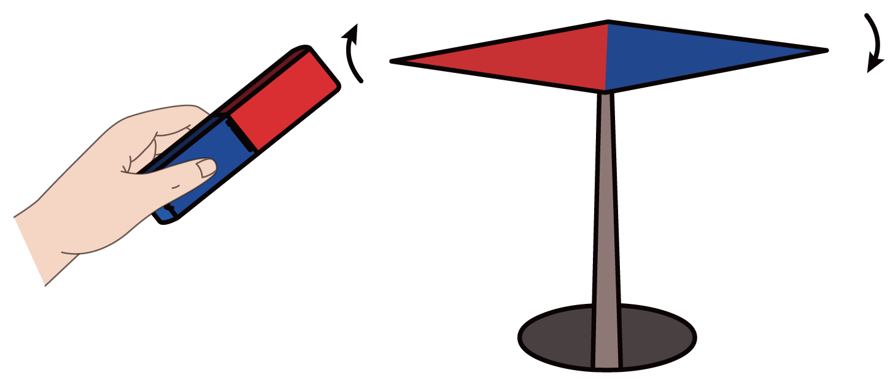
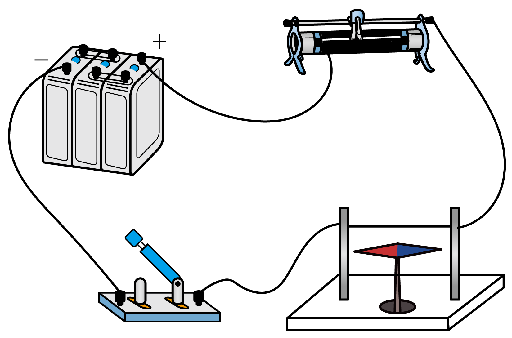
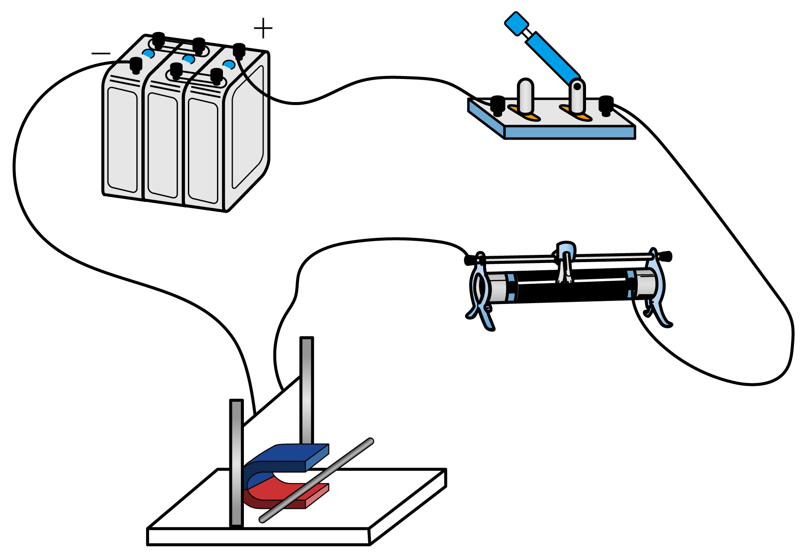

2022年北京市中考物理试题 · 选择题 第6、7、8、9、10题 · 对应解析
6. 图所示的是神舟十三号载人飞船返回舱返回地面时的情境。打开降落伞后，若返回舱在一段时间内的运动可看作是竖直向下的匀速运动，则关于返回舱在这段时间内，下列说法正确的是（ ）

A. 返回舱的动能不变B. 返回舱的重力势能不变
C. 返回舱的机械能不变D. 返回舱所受重力不做功
【答案】A
【解析】
【详解】A．因为返回舱是匀速运动，且质量未改变，所以返回舱的动能不变，故A正确；
B．返回舱 质量未变，但其高度在不断减小，所以返回舱的重力势能变小，故B错误；
质量未变，但其高度在不断减小，所以返回舱的重力势能变小，故B错误；
C．机械能等于动能和势能之和，动能不变，势能减小，所以机械能减小，故C错误；
D．重力竖直向下，返回舱在重力的方向上移动了距离，所以返回舱所受重力做功，故D错误。
故选A。
7. 小京通过焦距为10cm的凸透镜看到了提示牌上“关灯”两字放大的像，如图所示。下列说法正确的是（ ）

A. “关灯”两字放大的像是实像
B. 提示牌上“关灯”两字在凸透镜的焦点上
C. 提示牌上“关灯”两字到凸透镜的距离小于10cm
D. 提示牌上“关灯”两字到凸透镜的距离大于20cm
【答案】C
【解析】
【详解】由图可知，像是正立的，所以成正立放大的虚像，由凸透镜成像规律可知，当物距小于一倍焦距时，成正立放大的虚像，由于该凸透镜焦距为10cm，所以提示牌上“关灯”两字到凸透镜的距离小于10cm，故ABD错误，C正确。
故选C。
8. 图所示的是我国运动员在北京冬奥会上参加冰壶比赛时的情境。下列说法正确的是（ ）
A. 运动员推动冰壶滑行，以冰面为参照物冰壶是静止的
B. 掷出后的冰壶能继续运动，是由于冰壶具有惯性
C. 掷出后的冰壶继续运动时，冰壶受到手的推力
D. 冰壶运动越来越慢的过程中，冰壶的运动状态不变
【答案】B
【解析】
【详解】A．运动员推动冰壶滑行，以冰面为参照物，冰壶与冰面的位置在变化，所以冰壶是运动的，故A错误；
B．掷出后的冰壶是运动的，由于冰壶具有惯性，仍能保持原来的运动状态，继续向前运动，故B正确；
C．推力本质是弹力，弹力发生在两个接触的物体之间，掷出后的冰壶与手没有接触，所以冰壶不受手的推力，故C错误；
D．冰壶运动越来越慢，运动状态在改变，故D错误。
故选B。
9. 小京在探究影响滑动摩擦力大小的因素时，用弹簧测力计水平拉动木块沿水平木板做匀速直线运动，如图甲所示；将铁块放在木块上，再次用弹簧测力计水平拉动木块，使木块和铁块沿同一水平木板做匀速直线运动，如图乙所示。下列说法正确的是（ ）

A. 图甲所示实验中，弹簧测力计的示数小于滑动摩擦力的大小
B. 图乙所示实验中，木板受到的压力等于木块受到的重力
C. 甲、乙两次实验，探究的是滑动摩擦力的大小与压力是否有关
D. 甲、乙两次实验，探究的是滑动摩擦力的大小与接触面的粗糙程度是否有关
【答案】C
【解析】
【详解】A．图甲所示实验中，弹簧测力计水平拉动木块做匀速直线运动，此时木块处于平衡状态，由二力平衡可知，弹簧测力计的示数等于滑动摩擦力的大小，故A错误；
B．图乙所示实验中，将铁块放在木块上，所以木板受到的压力等于木块的重力和铁块的重力之和，故B错误；
CD．将铁块放在木块上，增大了木块对木板的压力，控制木块与木板间的接触面粗糙程度不变，所以探究的是滑动摩擦力的大小与压力是否有关，故C正确，D错误。
故选C
10. 如图所示的实验中能说明发电机工作原理的是（ ）
A.

磁极间有相互作用B.

通电导线周围存在磁场C.

通电导体在磁场中受力D.  电磁感应现象
电磁感应现象
【答案】D
【解析】
【详解】A．磁极之间的相互作用是同极相互排斥，异极相互吸引，并不能说明发电机的工作原理，故A不符合题意；
B．通电导体周围存在磁场是奥斯特实验，并不能说明发电机的工作原理，故B不符合题意；
C．通电导体在磁场中受力是电动机的工作原理，故C不符合题意；
D．电磁感应现象是发电机的工作原理。故D符合题意。
故选D。